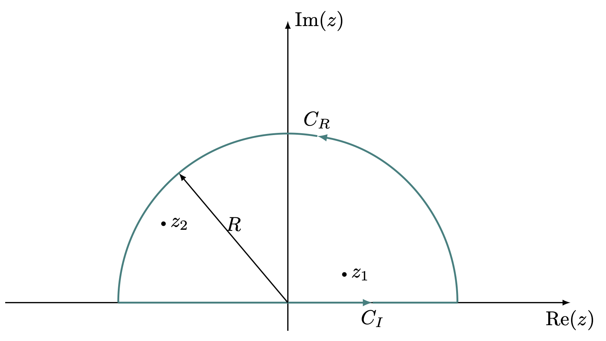
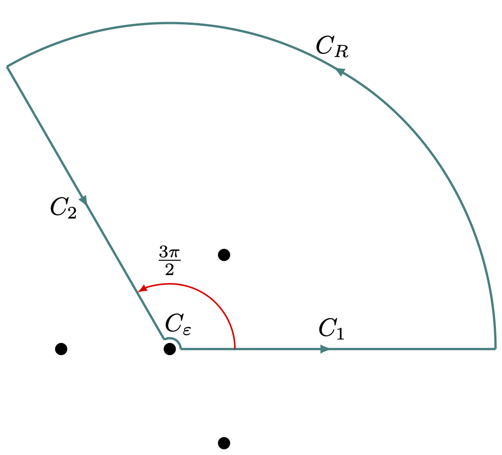
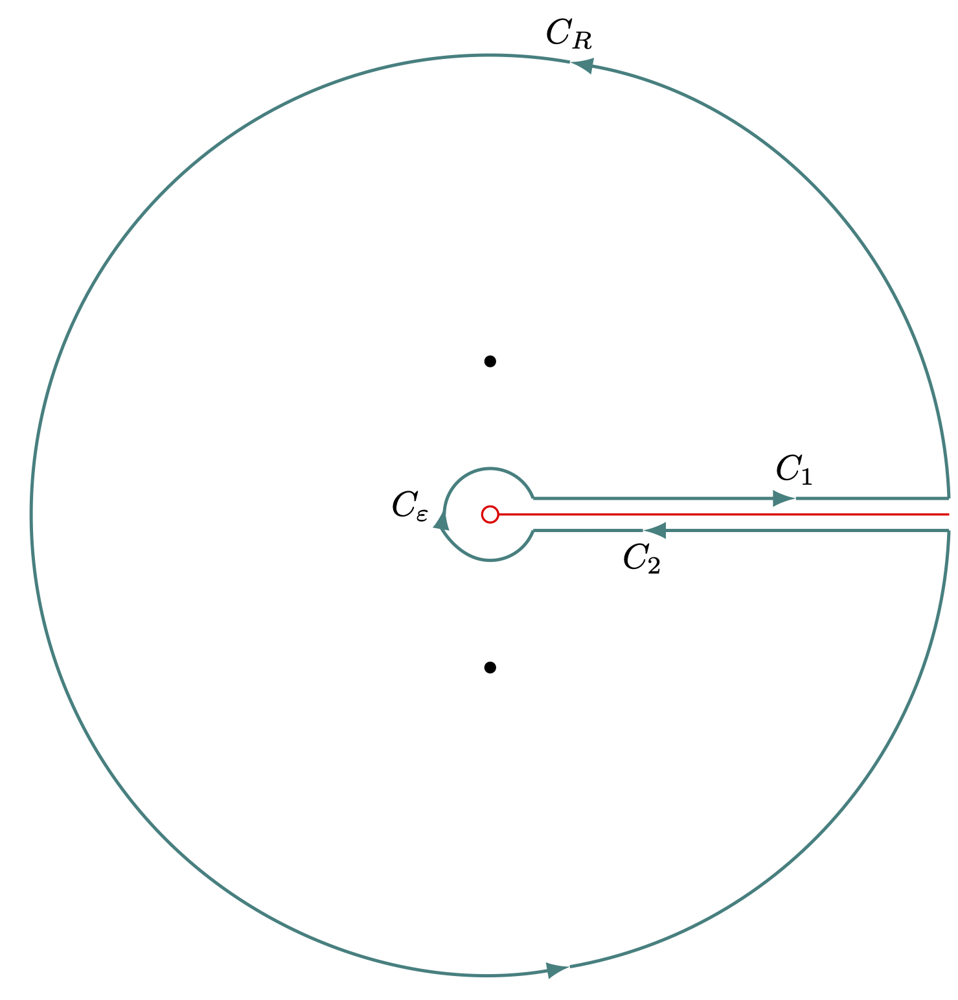
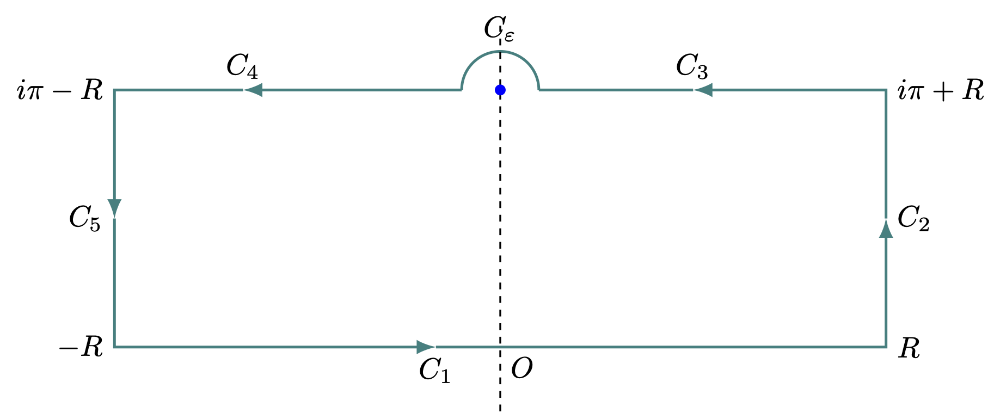
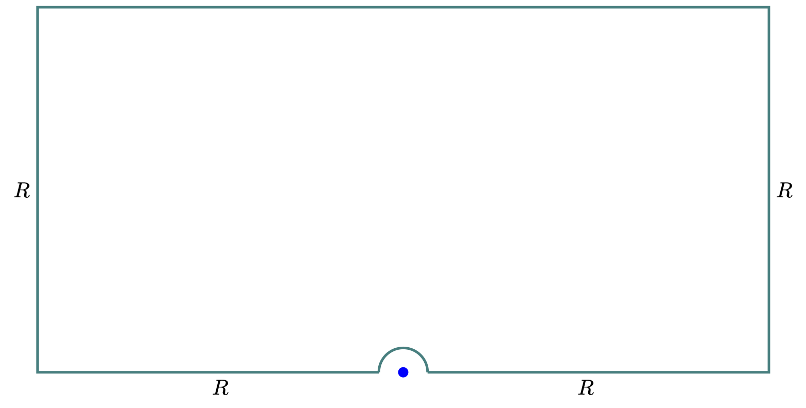
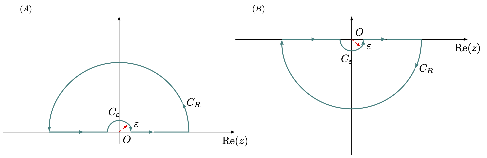
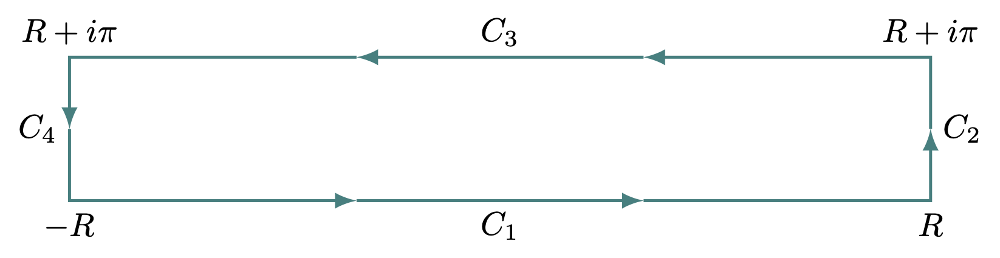

16 복소함수의 적분과 합
% %
%\[ \DeclarePairedDelimiters{\set}{\{}{\}} \DeclareMathOperator*{\argmax}{argmax} \]
16.1 복소함수의 적분
16.1.1 삼각함수의 적분
아래와 같은 꼴의 적분을 생각하자.
\[ I = \int_0^{2\pi} f(\sin \theta,\, \cos\theta)\, d\theta. \tag{16.1}\]
여기서 \(f\) 는 모든 \(\theta\) 에 대해 유한하며 \(\sin \theta,\ \cos\theta\) 에 대해 meromorphic 이라고 하자. 즉 단일값 함수이다. 변수를 \(z=e^{i\theta},\, dz=ie^{i\theta}\) 로 바꾼다면 식 16.1 는 복소평면상의 단위원 \(C_1\) 에 대한 경로적분으로 아래와 같이 바꿀 수 있다.
\[ I = -i \oint_{C_1} f\left(\dfrac{z-z^{-1}}{2i},\, \dfrac{z+z^{-1}}{2} \right) \, \dfrac{dz}{z}. \tag{16.2}\]
\(f\) 가 merohorphi 이므로 유수정리를 이용할 수 있으며 \(\{z_j\}\) 가 단위원 내에서의 단순 고립점이라고 하면
\[ I = (-i) 2\pi i \sum_j \text{Res}(f,\, z_i) \tag{16.3}\]
을 얻는다.
예제 16.1 다음 적분을 계산한다고 하자.
\[ I = \int_{0}^{2\pi} \dfrac{d\theta}{1+a\cos \theta},\qquad |a|<1 \]
복소평면상의 단위원 경로 \(C_1\) 에 대한 적분으로 바꾸면
\[ \begin{aligned} I &= -i \oint_{C_1} \dfrac{dz}{z(1+(a/2)(z+z^{-1}))}= - \dfrac{2i}{a} \oint_{C_1}\dfrac{dz}{z^2+(2/a) z + 1} \\ &= - \dfrac{2i}{a}\oint_{C_1} \dfrac{dz}{(z-z_1)(z-z_2)} \end{aligned} \]
이며, 이 때 \(z_{1,\,2} = -\dfrac{1 \pm \sqrt{1-a^2}}{a}\) 이다. \(|z_1| = \dfrac{1+\sqrt{1-a^2}}{a} > \dfrac{1}{a} > 1\) 이므로 단위원 안에 있지 않다. \(z_1z_2=1\) 이므로 \(|z_2|<1\) 이다. 즉 \(z_2\) 만이 단위원 안의 단순 고립점이다. 그렇다면,
\[ I = 2\pi i \left(-\dfrac{2i}{a}\right) \dfrac{1}{z_2-z_1} = \dfrac{2\pi}{\sqrt{1-a^2}} \]
이다.
예제 16.2 다음 적분을 계산한다고 하자.
\[ I = \int_{0}^{2\pi} \dfrac{\cos 2\theta\, d\theta}{5-4\cos \theta} \]
복소평면상의 단위원 경로 \(C_1\) 에 대한 적분으로 바꾸자. \(\cos 2\theta = 2\cos^2 \theta -1\) 이므로 \(\frac{1}{2}(z+z^{-1})^2-1 = \frac{1}{2}(z^2+z^{-2})\) 이다.
\[ \begin{aligned} I &= -i \oint_{C_1} \dfrac{\frac{1}{2}(z^2+z^{-2})}{5-2 (z+z^{-1})} \dfrac{dz}{z} = \dfrac{i}{4} \oint_{C_1} \dfrac{(z^4+1)\,dz}{z^2(z-1/2)(z-2)} \end{aligned} \]
이다. \(z=2\) 는 단위원 밖에 있으므로, \(z=0\) 일 때와 \(z=1/2\) 일 경우만 생각하면 된다.
\[ \begin{aligned} \text{Res}(f,\, 0) &= \lim_{z\to 0} \dfrac{d}{dz}(z^2f(z)) = \dfrac{5}{2}, \\ \text{Res}\left(f,\, \dfrac{1}{2}\right) &= - \dfrac{17}{6} \end{aligned} \]
이므로 다음의 결과를 얻는다.
\[ I = (2\pi i)\dfrac{i}{4} \left(\dfrac{5}{2} - \dfrac{17}{6}\right) = \dfrac{\pi}{6} \]
16.1.2 \(-\infty\) 에서 \(\infty\) 로의 적분
아래와 같은 형태의 적분을 구해야 한다고 하자.
\[ I = \int_{-\infty}^\infty f(x)\, dx \tag{16.4}\]
이 때 \(f(x)\) 가 복소평면의 위쪽 반평면(\(\text{Im}(z) \ge 0\)) 이나 아래쪽 반평면 (\(\text{Im}(z) \le 0\)) 에서 다음을 만족한다고 하자.
(\(1\)) \(f\) 는 유한한 극점을 제외하고는 해석적이며, 실수축에는 극점이 없다.
(\(2\)) \(\displaystyle \lim_{|z|\to \infty} zf(z) = 0\) 이다. 즉 원점으로부터 충분히 먼 거리에서 \(f(z)\) 는 \(1/z\) 보다 빨리 감소한다.
보통 식 16.4 형태의 적분을 계산 할 때 위의 두 조건을 만족하는 복소평면의 위쪽이나 아래쪽 반평면을 선택하게 된다. 우선 위쪽 반평면을 생각하기로 하자. 그리고 아래 그림 16.1 와 같은 contour 를 생각한다. \(z_1,\,z_2,\ldots\) 는 극점이며 contour \(C\) 는 \(C_R+C_I\) 라고 하자.

\[ \oint_C f(z)\, dz = \int_{C_R} f(z)\, dz + \int_{C_I}f(z)\, dz \]
인데 많은 경우 \(\displaystyle \lim_{R \to \infty} \int_{C_R}f(z)\,dz = 0\) 이며, \(z_1,\,z_2,\ldots,\,z_n\) 이 위쪽 반평면에서의 극점이라면
\[ I = \int_{C_I}f(z)\,dz = \oint_C f(z)\, dz = 2\pi i \sum_j \text{Res}(f,\,z_j) \]
가 된다. 이제 조거 (\(2\)) 를 만족할 경우 \(\lim_{R\to \infty}\int_{C_R} f(z)\, dz=0\) 임을 보이자. \(z=Re^{i\theta}\) 경로에서 \(\theta \in (\theta_1,\, \theta_2)\) 범위에서 적분한다면
\[ \lim_{R\to \infty} \left|\int_{C_R} f(z)\, dz\right| \le \int_{\theta_1}^{\theta_2} \lim_{R\to \infty}\left| f(Re^{i\theta}) R \right|\, d\theta = 0 \]
이 된다.
예제 16.3 다음 적분을 계산한다고 하자.
\[ I = \int_0^\infty \dfrac{1}{1+x^2}\, dx. \]
\(|I|<\infty\) 라면 우리는 다음을 쉽게 보일 수 있다.
\[ I = \dfrac{1}{2} \int_{-\infty}^\infty \dfrac{1}{1+x^2}\, dx \]
\(f(z) = \dfrac{1}{1+z^2}\) 은 \(z = \pm i\) 를 제외하면 해석적이므로 meromorphic 이다. 또한 \(\displaystyle \lim_{|z|\to \infty} zf(z) = 0\) 이므로 위쪽 반평면을 생각하면
\[ I = \dfrac{1}{2} 2\pi i \dfrac{1}{2i} = \dfrac{\pi}{2}. \]
16.1.3 복소 지수함수가 포함된 적분
실수 \(a\) 에 대해 아래와 같은 형태의 적분을 생각하자. \[ I = \int_{-\infty}^\infty f(x) e^{iax}\, dx \tag{16.5}\]
다음의 조건을 생각하자.
(\(1\)) \(a>0\) 이며 복소평면의 위쪽 반평면에서 유한개의 극점을 제외하고는 해석적이다.
(\(2\)) 위쪽 반평면에서 \(\displaystyle \lim_{|z|\to\infty} f(z) = 0\) 이다.
우리는 그림 16.1 에서의 위쪽 반평면에서의 \(C_R,\,C_I\) 로 이루어진 contour 를 생각하자. \(C_R\) 에서의 적분을 \(I_R\) 이라고 하고 \(z=Re^{i\theta}\) 로 잡자.
\[ I_R = \int_{C_R} f(z)e^{iaz}\, dz = \int_0^\pi f(Re^{i\theta}) e^{iaR\cos \theta -aR\sin \theta} \, iRe^{i\theta}\, d\theta \]
이며
\[ |I_R| \le \int_0^\pi |f(Re^{i\theta})| e^{-aR\sin\theta} R\, d\theta \]
이다. \(R\to \infty\) 일 때 \(f(Re^{i\theta})\to 0\) 이므로 충분히 큰 \(R\) 에 대해 \(|f(Re^{i\theta})|<\varepsilon_R\) 인 \(\varepsilon_R>0\) 을 생각 할 수 있다. 또한 \(\pi/2\le \theta\le \theta\) 에 대해 \(\sin (\theta) = \sin (\pi - \theta)\) 임을 이용하면
\[ |I_R| \le \varepsilon_R \int_0^\pi e^{-aR\sin \theta}\, d\theta = 2\varepsilon_R \int_0^{\pi/2} e^{-aR\sin \theta}\, d\theta \]
이다. \(\theta \in [0,\, \pi/2]\) 에서
\[ \dfrac{2}{\pi} \theta \le \sin \theta \]
이므로
\[ |I_R| \le 2\varepsilon_R \int_0^{\pi/2} e^{-2aR\theta/\pi}\, d\theta = 2\varepsilon_R \dfrac{R(1-e^{-aR})}{2aR/\pi} < \dfrac{\pi}{a}\varepsilon_R \]
이므로 \(\displaystyle \lim_{R\to \infty} I_R = 0\) 이다. 이것을 요르당의 따름정리라고 한다.
정리 16.1 (조르당의 따름정리) 복소 함수 \(f(z)\) 가 복소평면의 위쪽 반평면에서 정의된 반지름 \(R\) 의 반원형 \(C_R\) 에서 \(\displaystyle \lim_{|R|\to \infty} f(z) = 0\) 를 만족한다면 \(a>0\) 에 대해
\[ \lim_{R\to \infty} \int_{C_R} e^{iaz} f(z) \, dz = 0 \tag{16.6}\]
이다.
만약 \(a<0\) 에 대해 \(\int_{-\infty}^\infty f(x)e^{iax}\, dx\) 를 계산해야 한다고 하자. \(a\) 값이 중요한 것은 반원 경로 적분에서 적분값이 \(0\) 이 되어야 하는 것인데 \([0,\, \pi]\) 구간에서는 \(\sin \theta\) 가 양수이므로 \(a>0\) 에서 적분값이 사라진다. 따라서 \(a<0\) 이라면 \(\sin \theta\) 를 음수로 하는 \([\pi,\, 2\pi]\) 구간, 즉 아래쪽 반평면에서 적분하면 된다.
보조정리 16.1 (조르당의 따름정리의 따름정리) 복소 함수 \(f(z)\) 가 복소평면의 아래쪽 반평면에서 정의된 반지름 \(R\) 의 반원형 \(C_\overline{R}\) 에서 \(\displaystyle \lim_{|R|\to \infty} f(z) = 0\) 를 만족한다면 \(a<0\) 에 대해
\[ \lim_{R\to \infty} \int_{C_\overline{R}} e^{iaz} f(z) \, dz = 0 \tag{16.7}\]
이다.
결론적으로 조르당의 정리를 만족하는 함수 \(f(x)\) 에 대해 \(a>0\) 일 경우는 위쪽 평면에서, \(a<0\) 일 경우는 아래쪽 평면에서의 \(f(z)\) 의 특이점 \(z_1,\,z_2,\ldots,\,z_n\) 에 대해
\[ \int_{-\infty}^\infty f(x)\, e^{iax}\, dx = 2\pi i \sum_j \text{Res}(e^{iaz}f(z),\,z_j) \tag{16.8}\]
이다.
예제 16.4 다음 적분을 계산한다고 하자.
\[ I = \int_{0}^\infty \dfrac{\cos x}{x^2+1}\, dx \]
\(\cos x = (e^{ix}+e^{-ix})/2\) 이므로
\[ \begin{aligned} I &= \dfrac{1}{2}\int_{0}^\infty \dfrac{e^{ix}}{x^2+1} \, dx + \dfrac{1}{2}\int_{0}^\infty \dfrac{e^{-ix}}{x^2+1} \, dx \\ &= \dfrac{1}{2}\int_{0}^\infty \dfrac{e^{ix}}{x^2+1} \, dx + \dfrac{1}{2} \int_{-\infty}^0 \dfrac{e^{ix}}{x^2+1}\, dx = \dfrac{1}{2} \int_{-\infty}^\infty \dfrac{e^{ix}}{x^2+1}\, dx \end{aligned} \]
이다. 위쪽 반평면에서 생각하면 특이점은 \(x=+i\) 이므로,
\[ I = \dfrac{1}{2} (2\pi i) \dfrac{e^{-1}}{2i} = \dfrac{\pi}{2e} \]
예제 16.5 다음 적분을 계산한다고 하자.
\[ I = \int_{0}^\infty \dfrac{\sin x}{x}\, dx \]
\(\displaystyle \lim_{x\to 0} \dfrac{\sin x}{x} = 1\) 이며 \(f(x) = \dfrac{\sin x}{x}\) 를 \(x=0\) 에서 연속이 되도록 \(f(0) = 1\) 로 정의하면
\[ I = \lim_{\varepsilon \to 0^+} \int_{-\epsilon}^\infty \dfrac{\sin x}{x}\, dx \]
로 생각 할 수 있다. \(\sin x = (e^{ix}-e^{-ix})/(2i)\) 이므로
\[ \begin{aligned} I &= \lim_{\varepsilon \to 0^+} \left[\dfrac{1}{2i} \int_{\varepsilon}^\infty \dfrac{e^{ix}}{x}\, dx- \dfrac{1}{2i} \int_{\varepsilon}^\infty \dfrac{e^{-ix}}{x}\, dx\right] \\ &= \lim_{\varepsilon \to 0^+} \left[\dfrac{1}{2i} \int_{\varepsilon}^\infty \dfrac{e^{ix}}{x}\, dx+ \dfrac{1}{2i} \int_{-\infty}^{-\varepsilon} \dfrac{e^{ix}}{x}\, dx \right] \\ &= \dfrac{1}{2i} P.V\int_{-\infty}^\infty \dfrac{e^{ix}}{x}\, dx \end{aligned} \]
이다. 이제 그림 15.7 에서의 경로대로 적분을 구해보자.
\[ \oint \dfrac{e^{2iz}}{iz}\, dz = I + \int_{C_r} \dfrac{e^{iz}}{2iz}\, dz + \int_{C_R}\dfrac{e^{iz}}{2iz}\, dz \]
이며 \(C_R\) 에 대한 적분은 \(0\) 이며, \(C_r\) 에 대한 적분은 \(-\pi/2\) 이다. 따라서
\[ I = \int_{0}^\infty \dfrac{\sin x}{x}\, dx = \dfrac{\pi}{2} \]
이다.
16.1.4 대칭이 없는 무한대 적분
앞서 \((a,\,\infty)\) 적분을 대칭성을 이용하여 \((-\infty,\, \infty)\) 적분으로 변환시켰다. 여기서는 대칭성을 이용할 수 없는 경우에 대해 생각해 보기로 하자.
예제 16.6 다음 적분을 계산한다고 하자.
\[ I = \int_{0}^\infty \dfrac{dx}{x^3+1}. \]
이 적분은 \((-\infty,\, \infty)\) 적분으로 변환시킬 수 없다. 위 식에서 \(\arg = 2\pi/3\) 경로에서의 적분은 실수축 적분과 같다는 것에 착안하여 아래와 같은 contour 를 생각할 수 있다.
즉 \(z=re^{i2\pi/3}\) 로 잡으면 \(dz = e^{i2\pi/3}\, dr\) 이며, \(z^3 = r^3\)
\[ \int_{C_2} \dfrac{dz}{z^3+1} = \int_{r}^0 \dfrac{e^{i2\pi/3} dr}{r^3+1} = \left(\dfrac{1}{2} - i\dfrac{\sqrt{3}}{2}\right) \int_{0}^r \dfrac{dx}{x^3+1} \]
이다. 우리는 \(r\to \infty\) 극한에서 \(C_R\) 경로에서의 적분이 \(0\) 이라는 것을 안다( 16.1.2). 또한 contour \(C_1+C_R+C_2\) 내의 극점이 \(e^{\pi/3}\) 뿐이므로
\[ \oint_{C_1+C_R+C_2} \dfrac{dz}{z^3+1}\, dz = \left(\dfrac{3}{2}-i\dfrac{\sqrt{3}}{2}\right) I = 2\pi i \cdot \text{Res}\left(\dfrac{1}{z^3+1},\, \dfrac{1}{2}+i\dfrac{\sqrt{3}}{2}\right) \]
이며
\[ 2\pi i\text{Res}\left(\dfrac{1}{z^3+1},\, \dfrac{1}{2}+i\dfrac{\sqrt{3}}{2}\right) = \dfrac{2\pi} {\sqrt{3}(3/2 + i\sqrt{3}/2)} \]
이므로 \(I\) 를 다음과 같이 얻을 수 있다.
\[ I = \dfrac{2\pi}{3\sqrt{3}} \]
16.1.5 Branch point 를 피하여 적분하기
때때로 우리는 branch points 를 가진 함수를 적분해야 할 때가 있다. 이 경우 contour 적분을 위해서는 branch points 가 적분 경로상에, 그리고 contour 내부에 포함되지 않도록 contour 를 잡아야 한다.
예제 16.7 다음 적분을 계산한다고 하자.
\[ I = \int_{0}^\infty \dfrac{\ln x\, dx}{x^3+1}. \]
함수 \(f(x) = \dfrac{\ln x}{x^3+1}\) 에 대해 \(x=0\) 은 특이점이다. 또한 복소평면에서 branch point 이므로 contour 를 잡을 때 \(z=0\) 을 피해야 하며 \(0\) 에서 \(z=\infty\) 로 향한 branch cut 을 잡고 그것도 피해야 한다. 여기서는 아래와 같은 contour 를 잡기로 하자. 그림 16.2 와 유사하다. 또한 \(f(x)\) 는 예제 16.6 과 같은 극점을 가진다.

작은 호에 대한 적분 \(C_\varepsilon\) 은 시계방향이다. \(C_R\) 의 반지름을 \(R\), \(C_\varepsilon\) 의 반지름을 \(\varepsilon\) 이라고 하자. \(C=C_1+C_R+C_2+C_\varepsilon\) 이라고 하고
\[ \oint_C \dfrac{\ln z\, dz}{z^3+1} \]
을 생각하자. \(C_R\) 에 대한 적분은 16.1.2 의 조건에 따라 \(0\) 이 된다. \(C_1\) 에서의 적분은 \(I_1\) 이라고 하자. 즉
\[ I_1 = \int_{\varepsilon}^R \dfrac{\ln x\, dx}{x^3+1} \]
이다. \(C_2\) 에서의 적분을 위해 \(\theta_0=2\pi/3\), \(z=re^{i\theta_0}\), \(dz = e^{i\theta_0}\,dr\) 이라고 하면
\[ \int_{C_2} \dfrac{\ln z\, dz}{z^3+1} = \int_{R}^{\varepsilon} \dfrac{(\ln r + i\theta_0) e^{i \theta_0} \, dr}{r^3+1} = -e^{i\theta_0}I_1 - i\theta_0 e^{i\theta_0}\int_\varepsilon^R \dfrac{dx}{x^3+1} \]
이다. \(C_\varepsilon\) 에 대한 적분을 보자. \(z=\varepsilon e^{i\theta}\), \(dz=i\varepsilon e^{i\theta}\, d\theta\) 에 대해
\[ \int_{C_\varepsilon} \dfrac{\ln z\, dz}{z^3+1}= \int_{2\pi/3}^0 \dfrac{\ln \varepsilon+i\theta}{1+\varepsilon^3 e^{i3\theta}} i\varepsilon e^{i\theta}\, d\theta \]
이다.
\[ \left|\int_{C_\varepsilon} \dfrac{\ln z\, dz}{z^3+1}\right| \le \int_{0}^{2\pi/3} \dfrac{\varepsilon |\ln \varepsilon+i\theta |}{1} d\theta \le \int_{0}^{2\pi/3} \varepsilon |\ln \varepsilon| \, d\theta + \int_{0}^{2\pi/3} \varepsilon |\theta| d\theta \]
이며 \(\lim_{\varepsilon \to 0} \varepsilon |\ln \varepsilon| = 0\) 이므로 위 적분은 \(\varepsilon \to 0\) 극한에서 \(0\) 이다.
이제 \(R\to \infty,\, \varepsilon \to 0\) 극한에서 생각하면
\[ \oint_C\dfrac{\ln z\, dz}{z^3+1} = I - e^{i\theta_0}I - i\theta_0 e^{i\theta_0} \int_0^\infty \dfrac{dx}{x^3+1} \]
이며 예제 16.6 에서 \(\int_0^\infty \dfrac{dx}{x^3+1} = \dfrac{2\pi}{3\sqrt{3}}\) 임을 보였다. 또한 \(C\) 내부의 극점은 \(z=e^{i\theta_0}\) 뿐이므로
\[ \oint_C\dfrac{\ln z\, dz}{z^3+1} = 2\pi i \dfrac{i \pi e^{-i\theta_0}}{9} \]
이다. 이를 이용하면 \(I\) 값을 다음과 같이 계산 할 수 있다.
\[ I = - \dfrac{2\pi^2}{27}. \]
16.1.6 Branch Cuts 를 이용한 적분
때때로 branch cuts 를 이용한 적분은 어려운 적분을 계산할 때 의외로 유용하다.
예제 16.8 다음 적분을 계산한다고 하자.
\[ I = \int_{0}^\infty \dfrac{x^p dx}{x^2+1}, \qquad 0<p<1. \]
그리고 아래 그림 16.4 의 contour 에서의 복소평면에서의 적분
\[ \oint \dfrac{z^p\, dz}{z^2+1} \]
를 생각하자.

\(z=0\) 이 branch point 이며 양의 실수축을 branch cut 으로 잡닸다. \(z^p\) 는 다가함수 이지만 코시 주요값으로 branch cuts 의 바로 윗부분 (\(C_1\)) 으로 정했다. 짐작하듯이 \(\varepsilon \to 0\) 극한과 \(R \to \infty\) 극한을 취할 것이다. \(C_R\) 에 대한 적분은 이미 알고 있듯이 \(R\to \infty\) 적분에서 \(0\) 이며, \(C_\varepsilon\) 적분도 \(\varepsilon\to 0\) 극한에서 \(0\) 이다(연습문제 16.6). \(C_1\) 적분이 \(I\) 이며, \(C_2\) 적분 \(I_2\) 는 \(z=re^{i2\pi}\) 에 대해
\[ I_2 = \int_{C_2} \dfrac{z^p}{z^2+1}\,dz = \int_{R}^\varepsilon \dfrac{e^{i2p\pi}\,dr}{r^2+1}= -e^{2ip\pi} I \]
이다. 극점은 \(e^{i\pi/2},\, e^{3i\pi/2}\) 이므로 (후자를 \(e^{-ip\pi/2}\) 라고 하면 안된다)유수 정리에 의해
\[ (1-e^{2ip\pi}) I = 2\pi i \left(\dfrac{e^{ip\pi/2}}{2i} - \dfrac{e^{3ip\pi/2}}{2i}\right) \]
이므로,
\[ I = \dfrac{\pi e^{ip\pi/2}(e^{ip\pi - 1})}{e^{2ip\pi} -1} = \dfrac{\pi \sin (p\pi/2)}{\sin (p\pi)} = \dfrac{\pi}{2\cos (p\pi/2)} \]
이다.
예제 16.9 예제 16.6 에서 했던 아래의 적분을 다시 계산해보자.
\[ I = \int_{0}^\infty \dfrac{dx}{x^3+1}. \]
이 적분의 계산을 그림 16.4 의 contour 에서
\[ \oint \dfrac{\ln z\, dz}{z^3+1} \]
를 계산함으로써 얻을 수 있다. 극점의 위치는 \(z_1=e^{i\pi/3},\, z_2=e^{i\pi},\, z_3=e^{i5\pi/3}\) 이다. 역시 \(C_R\) 과 \(C_\varepsilon\) 에서의 적분의 기여는 \(R\to\infty,\, \varepsilon \to 0\) 극한에서 \(0\) 이며, \(C_1\) 에서의 적분을 \(I_1\) 이라고 하자. 즉
\[ I_1 = \int_{0}^\infty \dfrac{\ln x\, dx}{x^3+1} \]
이다. 그렇다면 \(C_2\) 에서의 적분 \(I_2\) 는
\[ I_2 = \int_{C_2}\dfrac{\ln z\, dz}{z^3+1} = \int_{R}^\varepsilon \dfrac{(\ln r + i2\pi)\, dr}{r^3+1} = - \int_{\varepsilon}^{R} \dfrac{\ln r}{r^3+1}\, dr - 2i\pi I = -I_1 - 2\pi iI \]
이다. 즉 \(I_1+I_2= -2\pi i I\) 이며, 따라서
\[ \oint_C\dfrac{\ln z\, dz}{z^3+1} = -2\pi i I \]
이다. 극점에 대한 유수를 구하면
\[ \text{Res}(f,\, e^{i\pi/3}) = \dfrac{i\pi}{9e^{2\pi i/3}}, \qquad \text{Res}(f,\, e^{i\pi} ) = \dfrac{ i \pi }{3},\qquad \text{Res}(f,\, e^{i5\pi/3}) = \dfrac{5i pi}{9 e^{10i\pi/3}} \]
이므로,
\[ -2\pi I = 2\pi I \left(\text{Res}(f,\, e^{i\pi/3}) + \text{Res}(f,\, e^{i\pi} ) +\text{Res}(f,\, e^{i5\pi/3}) \right) \]
를 통해 \(I\) 를 구하면 아래와 같다.
\[ I = \dfrac{2\pi}{3\sqrt{3}}. \]
16.1.7 주기함수의 적분
삼각함수, 즉 복소평면에서의 hyperbolic 함수에 대한 적분의 경우를 다룬다.
예제 16.10 다음의 적분을 생각하자.
\[ I = \int_0^\infty \dfrac{x\,dx}{\sinh x}. \]
\(\sinh(iy) = i \sin(y)\) 임을 안다. 이제 그림 16.5 의 contour 에서의 적분
\[ \oint \dfrac{z \, dz}{\sinh z} \]
를 생각하자. 또한
\[ \sinh (x+iy) = \sinh (x) \cos(y) +i \cosh(x) \sin(y) \]
임을 안다. 이제 극점에 대해 생각해보자.
(\(1\)) 로피탈의 정리를 이용하면 \(\displaystyle \lim_{z\to 0}\dfrac{z}{\sinh z}=1\) 임을 안다. 따라서 \(z=0\) 은 극점이 아니다.
(\(2\)) \(\sinh (z) = 0 \iff z=in\pi,\, n\in \mathbb{Z}\) 이다. 따라서 \(z= \pm i\pi,\, \pm 2\pi,\ldots\) 가 극점이다.
위로부터 그림 16.5 의 contour 에서의 극점은 \(z=i\pi\) 뿐임을 안다. 그렇다면,
\[ \oint_{C} \dfrac{z\,dz}{\sinh z} = 2\pi i \text{Res}\left(\dfrac{z}{\sinh z},\, i\pi \right) = (2\pi i)(-i\pi) = 2\pi^2 \]
이다.

(\(1\)) \(C_1\) 경로를 따르는 적분은 \(2I\) 이다. \(x/\sinh x\) 가 우함수 임을 생각하면 자명하다.
(\(2\)) \(C_2\) 경로를 따르는 적분을 생각하자. \(z=R+it,\, t\in [0,\, \pi]\) 경로에서 생각하면,
\[ \left|\int_{R}^{i\pi + R}\dfrac{z\,dz}{\sinh z} \right| \le \int_{0}^{\pi} \left|\dfrac{i(R+it)\,dt}{\sinh(R+it)}\right|\,dt \]
이다. 충분히 큰 \(R\) 에 대해 \(|e^{-R-it}|= |e^{-R}|<1\) 이므로
\[ \sinh(R+it) = \dfrac{\left|e^{R+it} - e^{-R-it}\right|}{2} \ge \dfrac{1}{2}\left(\left|e^{R+it}\right| - \left|e^{-R-it}\right|\right) \ge \dfrac{e^R-1}{2} \]
이며, \(|R+it| < \sqrt{R^2+\pi^2}\) 임을 이용하면
\[ \left|\int_{R}^{i\pi + R}\dfrac{z\,dz}{\sinh z} \right| \le \int_{0}^{\pi} \dfrac{\sqrt{R^2+\pi^2}}{e^R-1}\, dt = \dfrac{\pi \sqrt{R^2+\pi^2}}{e^R-1} \]
이다. \(\displaystyle \lim_{R\to \infty}\dfrac{\pi \sqrt{R^2+\pi^2}}{e^R-1}=0\) 이므로 \(C_2\) 에 의한 적분 기여는 \(0\) 이다.
(\(3\)) \(C_5\) 경로의 적분도 \(C_2\) 와 같이 \(R\to \infty\) 극한에서 \(0\) 임을 보일 수 있다.
(\(4\)) \(C_3\), \(C_4\) 적분을 생각하자. \(\sinh (x + i\pi)= - \sinh (x)\) 이므로
\[ \begin{aligned} \int_{C_3} \dfrac{z\,dz}{\sinh z} + \int_{C_4}\dfrac{z\,dz}{\sinh z} &= - \int_{R}^\varepsilon \dfrac{(x+i\pi)\,dx}{\sinh x} -\int_{-\varepsilon}^{-R} \dfrac{(x+i\pi)\,dx}{\sinh x} \\ &= \int_{\varepsilon}^R \dfrac{(x+i\pi)\,dx}{\sinh x} + \int_{\varepsilon}^{R} \dfrac{(x-i\pi)\,dx}{\sinh x} \\ &= 2\int_{\varepsilon}^R \dfrac{x\,dx}{\sinh x} \end{aligned} \]
이므로 \(\varepsilon \to 0,\, R\to \infty\) 극한에서 적분값은 \(2I\) 이다.
(\(5\)) \(C_\varepsilon\) 경로에서의 적분을 생각하자. 앞서 계산한 전체 경로 \(C\) 에서의 적분의 반이므로 \(\pi^2\) 이다. 그렇다면 경로의 총 적분은 \(4I + \pi^2\) 이며, residue 로 계산한 적분값은 \(2\pi^2\) 이므로
\[ 4I + \pi^2 = 2\pi^2 \implies I = \dfrac{\pi^2}{4} \]
이다.
연습문제
연습문제 16.1 (Arfken 11.8.1) 예제 16.1 의 적분을 일반화 한 아래의 식이 성립함을 보여라.
\[ \int_{0}^{2\pi} \dfrac{d\theta}{a\pm b \cos \theta} = \int_{0}^{2\pi} \dfrac{d\theta}{a\pm b \sin \theta} = \dfrac{2\pi}{\sqrt{a^2-b^2}}, \qquad \text{for } a>|b|. \]
\(|b|>|a|\) 인 경우는 어떻게 되는가?
(해답). \(a>0\) 이며 \(b\) 는 부호를 정하지 않으면 \(a+b\cos\theta\) 에 대해서반 생각해도 된다. 복소평면상의 단위원의 경로 \(C_U\) 에 대해 \(z=e^{i\theta}\) 로 놓으면, \(dz = ie^{i\theta}\,d\theta\) 이므로
\[ \begin{aligned} \int_0^{2\pi} \dfrac{d\theta}{a + b \cos \theta} &= -2i\oint_{C_U} \dfrac{dz}{(2az + b(z^2+1))} \end{aligned} \]
이며 극점은 \(-\dfrac{a}{b} \pm \sqrt{\dfrac{a^2}{b^2}-1}\) 이다. \(a^2>b^2\) 이므로 극점은 실수축에 있고 \(-\dfrac{a}{|b|} + \sqrt{\dfrac{a^2}{b^2}-1}\) 만 단위원 내부에 있으므로
\[ \oint_{C_U} \dfrac{dz}{(2az + b(z^2+1))} = 2\pi i \dfrac{1}{2\sqrt{(a/b)^2-1}} \]
이다. 따라서 \[ \begin{aligned} \int_0^{2\pi} \dfrac{d\theta}{a + b \cos \theta} &= \dfrac{2\pi}{\sqrt{a^2-b^2}} \end{aligned} \]
이다. \(1/(a+b\sin \theta)\) 에 대한 적분도 같은 방식으로 계산 할 수 있다.
\(|b|>|a|\) 이면 극점이 단위원 경로상에 존재한다.
연습문제 16.2 (Arfken 11.8.2) \(a>1\) 에 대해 \(\displaystyle \int_0^{\pi} \dfrac{d\theta}{(a+\cos \theta)^2} = \dfrac{\pi a}{(a^2-1)^{3/2}}\) 임을 보여라.
(해답). 우선 \(\cos (2\pi - \theta)= \cos \theta\) 임을 이용하면
\[ \int_{\pi}^{2\pi} \dfrac{d\theta}{a+\cos\theta} \overset{\phi = 2\pi - \theta}{=} \int_{\pi}^0 \dfrac{-d\phi}{a+\cos (2\pi - \phi)} = \int_0^\pi \dfrac{d\phi}{a+\cos \phi} \]
이다. 따라서
\[ \int_{0}^\pi \dfrac{d\theta}{a+\cos \theta} = \dfrac{1}{2}\int_0^{2\pi} \dfrac{d\theta}{a+\cos \theta} \]
이다. 또한
\[ \dfrac{d}{da}\left(\int_0^{\pi} \dfrac{d\theta}{a+\cos \theta}\right) = \int_0^{\pi} \dfrac{\partial }{\partial a}\left(\dfrac{1}{a+\cos\theta}\right)\,d\theta = -\int_0^{\pi}\dfrac{1}{(a+\cos\theta)^2}\, d\theta \]
이므로
\[ \int_{0}^{\pi}\dfrac{d\theta}{(a+\cos\theta)^2} = - \dfrac{1}{2}\dfrac{d}{da}\left(\int_0^{2\pi} \dfrac{d\theta}{a+\cos\theta}\right) = -\dfrac{1}{2} \dfrac{d}{da}\left(\dfrac{2\pi}{\sqrt{a^2+1}}\right) = \dfrac{\pi a}{(a^2+1)^{3/2}} \]
이다.
연습문제 16.3 (Arfken 11.8.3) \(|t|<1\) 에 대해 \(\displaystyle \int_0^{2\pi} \dfrac{d\theta}{1-2t\cos\theta + t^2} = \dfrac{2\pi}{1-t^2}\) 임을 보여라. \(|t|>1\) 이면 어떠한가? \(|t|=1\) 이면 어떤가?
(해답). \(|t|<1\) 이면 \(1+t^2\ge 2t,\, 1+t^2\ge 0\) 임을 안다. 따라서 연습문제 16.1 에 의해
\[ \int_0^{2\pi} \dfrac{d\theta}{1-2t\cos \theta +t^2} = \dfrac{2\pi}{(1+t^2)^2-4t^2} = \dfrac{2\pi}{1-t^2} \]
이다. \(|t|>1\) 일 경우에는 역시 \(1+t^2\ge 2t\) 이므로 적분값이 \(\dfrac{2\pi}{t^2-1}\) 이며, \(|t|=1\) 일 경우에는 단위원 경로 내에 극점이 존재하므로 적분을 계산 할 수 없다.
연습문제 16.4 (Arfken 11.8.4) \(\displaystyle \int_0^{2\pi} \dfrac{\cos 3\theta \, d\theta}{5-4\cos \theta}\) 를 계산하라
(해답). 단위원 경로를 생각하고 \(z=e^{i\theta},\, dz = izd\theta\) 라고 하면
\[ \begin{aligned} \int_0^{2\pi} \dfrac{\cos 3\theta}{5-4\cos \theta} &= -i\oint_{C_U} \dfrac{(z^3+z^{-3})/(2z)\, dz}{5-2z-2z^{-1}}=-\dfrac{i}{4}\oint_{C_U} \dfrac{(z^6+1)\,dz}{z^3(z-1/2)(z-2)} \end{aligned} \]
단위원 안의 극점은 \(z=0,\, z=1/2\) 이며 \(f(z) = \dfrac{(z^6+1)}{z^3(z-1/2)(z-2)}\) 라고 했을 때
\[ \text{Res}(f,\, 1/2) = -\dfrac{65}{12} \]
이며,
\[ \text{Res}(f,\, 0) = \dfrac{1}{2}\lim_{z\to 0} \dfrac{d^2}{dz^2} \dfrac{z^6+1}{(z-1/2)(z-2)}= \dfrac{21}{4} \]
이므로
\[ \int_0^{2\pi} \dfrac{\cos 3\theta}{5-4\cos \theta} = - \dfrac{i}{4} (2\pi i) \left(\text{Res}(f,\, 1/2) + \text{Res}(f,\, 0)\right) = \dfrac{\pi}{12} \]
이다.
연습문제 16.5 (Arfken 11.8.5) 유수에 대한 계산을 이용하여 다음을 보여라.
\[ \int_{0}^\pi \cos^{2k} \theta \, d\theta = \pi \dfrac{(2k)!}{2^{2k}(k!)^2} = \pi\dfrac{(2k-1)!!}{(2k)!!} ,\qquad k=0,\,1,\,2,\ldots. \]
(해답). 단위원에 대한 경로 \(C_U\) 를 따르는 적분을 생각한다. \(z=e^{i\theta},\, dz = (iz)d\theta\) 이다. 또한 \(\cos(2\pi - \theta) = \cos \theta\) 이므로,
\[ \int_0^{\pi} \cos^{2k}\theta\, d\theta = \dfrac{1}{2} \int_0^{2\pi} \cos^{2k}\theta\,d\theta \]
이다. \(\cos \theta = (z+z^{-1})/2\) 이므로
\[ \begin{aligned} \int_{0}^{2\pi} \cos^{2k}\theta \, d\theta &= \dfrac{-i}{2^{2k}} \int_{C_U} \dfrac{1}{z}\left(z+z^{-1}\right)^{2k} \, dz = \dfrac{-i}{2^{2k}} \oint_{C_U} \dfrac{(z^2+1)^{2k}}{z^{2k+1}}\, dz \end{aligned} \]
극점은 \(z=0\) 뿐이며 여기서의 residue \(\displaystyle R_0 = \text{Res}\left(\dfrac{(z^2+1)^{2k}}{z^{2k+1}},\, 0\right)\) 를 계산해 보자.
\[ R_0 = \dfrac{1}{(2k)!} \lim_{z\to 0}\dfrac{d^{2k}}{dz^{2k}} (z^2+1)^{2k} = \dfrac{1}{(2k)!} \lim_{z\to 0} \sum_{m=0}^{2k} \begin{pmatrix}2k \\ m\end{pmatrix} \dfrac{d^{2k}}{dz^{2k}}z^{2m} \]
이며
\[ \lim_{z\to 0}\dfrac{d^{2k} z^{2m}}{dz^{2k}} = (2m)! \delta_{k,m} \]
이므로,
\[ R_0 = \dfrac{1}{(2k)!} \dfrac{(2k)!}{(k!)^2}(2k!)= \dfrac{(2k)!}{(k!)^2} \]
이다. 따라서
\[ \int_0^{\pi} \cos^{2k}\theta\, d\theta = \dfrac{1}{2} \int_{0}^{2\pi} \cos^{2k}\theta \, d\theta = \dfrac{-i}{2^{2k+1}} \cdot (2\pi i) \cdot R_0 = \pi\dfrac{(2k)!}{2^{2k} (k!)^2} \]
또한
\[ \dfrac{(2k)!}{2^k(k!)} = \dfrac{(2k)(2k-1)(2k-2)\cdots 3\cdot 2 }{(2k)(2k-2)(2k-4) \cdots 4 \cdot 2 }= (2k-1)!! \]
이며,
\[ 2^k(k!) = (2k) (2(k-1))(2(k-2)) \cdots 4 \cdot 2 = (2k)(2k-2)(2k-4) \cdots 4 \cdot 2 = (2k)!! \]
이므로
\[ \int_0^{\pi} \cos^{2k}\theta\, d\theta =\pi\dfrac{(2k)!}{2^{2k} (k!)^2} = \pi \dfrac{(2k)!}{2^k(k!)}\dfrac{1}{2^k (k!)}= \pi \dfrac{(2k-1)!!}{(2k)!!} \]
이다.
연습문제 16.6 (Arfken 11.8.7) 예제 16.8 에서 \(R\to \infty\) 일 때의 \(C_R\) 경로에서의 적분과 \(\varepsilon \to 0\) 에서의 \(C_\varepsilon\) 경로에서의 적분값이 모두 \(0\) 임을 보여라.
(해답). \(0<p<1\) 에 대해 \(f(z) = \dfrac{z^p}{z^2+1}\) 이라고 하자. 16.1.2 의 두가지 조건을 \(f\) 가 만족하기 때문에 \(C_R\) 경로에서의 적분은 \(R\to \infty\) 극한에서 \(0\) 이다. \(C_\varepsilon\) 경로에서의 적문을 생각하자. \(z=\varepsilon e^{i\theta},\, dz=i\varepsilon e^{i\theta}\,d\theta\) 이므로
\[ \left|\oint_{C_\varepsilon}f(z)\,dz \right| = \int_{0}^{2\pi} \left|\dfrac{\varepsilon^p e^{i{(p+1)\theta}}}{\varepsilon^2e^{i2\theta} +1}\right| d\theta \le \int_0^{2\pi} \dfrac{\varepsilon^p}{|\varepsilon^2 e^{i2\theta}+1|}\, d\theta \]
\(\varepsilon \to 0\) 극한에서 생각하므로 \(\varepsilon<1/\sqrt{2}\) 라고 할 수 있다. 그렇다면 \(|1+\varepsilon^2e^{i2\theta}| \ge 1 - \varepsilon^2 > 1/2\) 이며, 따라서
\[ \left|\oint_{C_\varepsilon}f(z)\,dz \right| < 2\int_0^{2\pi}\varepsilon^p\,d\theta = 4\pi \varepsilon^p \]
이다. \(0<p<1\) 이므로 \(\varepsilon \to 0\) 극한에서 \(C_\varepsilon\) 경로의 적분은 \(0\) 이다.
연습문제 16.7 (Arfken 11.8.8) \(a>b>0\) 에서 \(\displaystyle \int_{-\infty}^\infty \dfrac{\cos bx - \cos ax}{x^2}\, dx\) 값을 구하라.
(해답). 예제 16.5 로부터 \(\displaystyle \int_{-\infty}^\infty \dfrac{\sin t}{t} \, dt = \pi\) 임을 안다. 앞의 적분에서 \(s>0\) 에 대해 \(t=sx\) 로 환하면 \(\displaystyle \int_{-\infty}^\infty \dfrac{\sin (sx)}{x}\, dx= \pi\) 이다.
\[ \dfrac{d}{ds}\left(\dfrac{\cos sx}{x^2}\right) = -\dfrac{\sin s x}{x} \]
이므로
\[ \dfrac{\cos bx- \cos ax}{x^2} = \int_b^a \dfrac{\sin sx}{x}\,ds \tag{16.9}\]
\[ \begin{aligned} \int_{-\infty}^\infty \dfrac{\cos bx - \cos ax}{x^2}\, dx &= \int_{-\infty}^\infty \int_{b}^a \dfrac{\sin sx}{x}\,ds \,dx= \int_{b}^a \int_{-\infty}^\infty \dfrac{\sin sx}{x}\, dx \,ds \\ &= \int_b^a \pi \, dx = \pi (a-b) \end{aligned} \] 이다.
연습문제 16.8 (Arfken 11.8.9) \(\displaystyle \int_{-\infty}^\infty \dfrac{\sin^2 x}{x^2}\, dx = \pi\) 임을 보여라.
(해답). \(\sin^2 x = (1-\cos 2x)/2\) 임을 이용한다. 식 16.9 을 이용하면
\[ \begin{aligned} \int_{-\infty}^\infty \dfrac{\sin^2 x}{x^2}\, dx &= \int_{-\infty}^\infty \dfrac{1-\cos 2x}{2x^2}\,dx = \dfrac{1}{2} \int_{-\infty}^\infty \int_0^2 \dfrac{\sin sx}{x}\,ds\,dx \\ &= \dfrac{1}{2} \int_0^2 \int_{-\infty}^\infty \dfrac{\sin sx}{x}\, dx\,ds = \dfrac{1}{2}\int_0^2 \pi\,ds = \pi . \end{aligned} \]
연습문제 16.9 (Arfken 11.8.10) \(\displaystyle \int_{0}^\infty \dfrac{x \sin2 x}{x^2+1}\, dx = \dfrac{\pi}{2e}\) 임을 보여라.
(해답). \(\dfrac{x \sin2 x}{x^2+1}\) 가 우함수 이므로 \(\displaystyle \int_{0}^\infty \dfrac{x \sin2 x}{x^2+1}\, dx = \dfrac{1}{2}\int_{-\infty}^\infty \dfrac{x \sin2 x}{x^2+1}\, dx\) 이다. 복소함수 \(f(z) = \dfrac{ze^{2iz}}{z^2+1}\) 에 대해 \(\dfrac{f(z)+f(-z)}{2i}= \dfrac{z \sin 2z}{z^2+1}\) 임을 이용하여 문제의 적분을 계산 할 수 있다.
우선 그림 16.1 의 경로대로 위쪽 반평면에서 \(\oint_C f(z)\,dz\) 를 계산해 보자. \(C_R\) 에 대한 경로적분은 \(0\) 이며 경로상의 고립점은 \(z=i\) 이므로
\[ \lim_{R\to \infty}\int_{C_I} \dfrac{ze^{iz}}{z^2+1}\, dz = (2\pi i) \text{Res}(f, i)= 2\pi i \dfrac{1}{2e} = \dfrac{i\pi}{e} \]
또한
\[ \int_{-\infty}^\infty f(-x)\, dx \overset{t = -x}{=} \int_{-\infty}^\infty f(t)\,dt = \dfrac{i\pi}{2} = \int_{-\infty}^\infty f(t)\, dt = \dfrac{i\pi}{e} \]
이므로,
\[ \int_0^\infty \dfrac{x\sin 2x}{x^2+1}\,dx = \dfrac{1}{2} \dfrac{1}{2i} \dfrac{2i\pi}{e}= \dfrac{\pi}{2e}. \]
연습문제 16.10 (Arfken 11.8.11) 양자역학에서의 전이확률을 계산할 때 \(f(t,\,\omega)= \dfrac{2(1-\cos \omega t)}{\omega^2}\) 가 등장한다. 다음을 보여라.
\[ \int_{-\infty}^\infty f(t,\,\omega)\, d\omega = 2\pi t \]
(해답). 연습문제 16.8 의 결과를 사용한다. \[ \begin{aligned} \int_{-\infty}^\infty f(t,\,\omega)\, d\omega &= \int_{-\infty}^\infty \dfrac{2(1-\cos \omega t)}{\omega^2}\,d\omega = \int_{\infty}^\infty \dfrac{4\sin^2(\omega t/2)}{\omega^2}\, d\omega \\ &\overset{s=\omega t/2}{=} 2t \int_{-\infty}^\infty \dfrac{\sin^2 s}{s^2}\,ds = 2\pi t \end{aligned} \]
연습문제 16.11 (Arfken 11.8.12) \(a>0\) 에 대해 다음을 보여라.
(\(a\)) \(\displaystyle \int_{-\infty}^\infty \dfrac{\cos x}{x^2+a^2}\,dx = \dfrac{\pi}{a}e^{-a}\). \(\cos x\) 가 \(\cos kx\) 가 되면 어떻게 바뀌는가?
(\(b\)) \(\displaystyle \int_{-\infty}^\infty \dfrac{x\sin x}{x^2+a^2} \,dx = \pi a^{-a}\). \(\sin x\) 가 \(\sin kx\) 로 바뀌면 어떻게 되는가?
(해답). (\(a\)) \(f(z) = \dfrac{e^{iz}}{z^2+a^2}\) 이라고 하면 \(\displaystyle \dfrac{\cos x}{x^2+a^2} = \dfrac{f(x)+f(-x)}{2}\) 이다. 위쪽 반평면에 대해 그림 16.1 경로의 적분을 생각하자. \(C_R\) 경로 적분값은 \(0\) 이며, 경로 내부의 고립점은 \(ia\) 이므로
\[ \int_{-\infty}^\infty \dfrac{e^{iz}}{z^2+a^2} \,dz = 2\pi i \text{Res}(f, ia) = 2\pi i \dfrac{e^{-a}}{2ia} = \dfrac{\pi}{a}e^{-a} \]
이다. 또한 \(\int_{-\infty}^\infty f(-x)\, dx \overset{t=-x}{=} = \int_{-\infty}^\infty f(t)\, dt\) 이므로
\[ \int_{-\infty}^\infty \dfrac{\cos x}{x^2+a^2}\,dx = \int_{-\infty}^\infty f(z) = \dfrac{\pi}{a}e^{-a} \]
이다. \(\cos x\) 가 \(\cos kx\) 로 바뀌는 경우를 보자. \(k>0\) 라고 하자.
\[ \int_{-\infty}^\infty \dfrac{\cos kx}{x^2+a^2}\,dx \overset{t=kx}{=} \dfrac{1}{k}\int_{-\infty}^\infty \dfrac{\cos t\, dt}{t^2/k^2+a^2} = k\int_{-\infty}^\infty \dfrac{\cos t\, dt}{t^2+a^2k^2} = \dfrac{\pi}{a}e^{-ak}. \]
(\(b\)) \(f(z) = \dfrac{ze^{iz}}{z^2+a^2}\) 라고 하면 \(\dfrac{x\sin x}{x^2+a^2} = \dfrac{f(z)+f(-z)}{2i}\) 이다. 그림 16.1 의 경로를 생각하면 \(C_R\) 경로의 적분은 \(R\to \infty\) 극한에서 \(0\) 이며 contour 내의 고립점은 \(ia\) 이다. 따라서,
\[ \int_{-\infty}^\infty \dfrac{ze^{iz}\, dz}{z^2+a^2} = 2\pi i \text{Res}(f,\, ia)= 2\pi i \dfrac{iae^{-a}}{2ai}= i\pi e^{-a} \]
이므로
\[ \int_{-\infty}^\infty \dfrac{x\sin x}{x^2+a^2} \,dx = \dfrac{1}{2i} 2i\pi e^{-a} = \pi e^{-a} \]
이다. \(\sin x\) 가 \(\sin kx\) 로 바뀌는 경우를 보자. \(k>0\) 라고 하자.
\[ \int_{-\infty}^\infty \dfrac{x\sin kx}{x^2+a^2} \,dx\overset{t=kx}{=} \int_{-\infty}^\infty \dfrac{t \sin t}{t^2+a^2k^2} = \pi e^{-ak} \]
이다.
연습문제 16.12 (Arfken 11.8.13) 아래 그림의 contour 에서 \(R\to \infty\) 극한을 이용하여 \(\displaystyle \int_{-\infty}^\infty \dfrac{\sin x}{x}\,dx = \pi\) 임을 보여라.

(해답). \(f(z) = \dfrac{e^{iz}}{z}\) 라고 하면 \(\dfrac{\sin x}{x} = \dfrac{f(x) + f(-x)}{2i}\) 이다. 이 contour 내부에 고립점이 없으므로
\[ \begin{aligned} \oint_C \dfrac{e^{iz}}{z} & = PV\int_{-R}^R \dfrac{e^{ix}}{x}\,dx + \int_{C_\varepsilon} \dfrac{e^{iz}}{z}\,dz + \int_0^R \dfrac{ i e^{iR-t} \, dt}{R+it} \\ &\qquad + \int_{R}^{-R} \dfrac{e^{it-R}\,dt}{t+iR} + \int_{R}^0 \dfrac{ie^{-iR-t}}{-R+it}\, dt = 0 \end{aligned} \tag{16.10}\]
이다. 여기서 작은 반원에 대한 시계방향 경로 적분 \(C_\varepsilon\) 은
\[ \int_{C_\varepsilon} \dfrac{e^{iz}}{z}\,dz = - i\pi \]
이며, 위쪽 수평선에 대한 적분은 \[ \left|\int_{R}^{-R} \dfrac{e^{it-R}\,dt}{t+iR}\right| \le \int_{-R}^R \dfrac{e^{-R}}{R}\, dt = \dfrac{2}{e^R} \]
이므로 \(R\to \infty\) 극한에서 \(0\) 이다. 오른쪽 수직선에 대한 적분과 왼쪽 수직선에 대한 적분의 합은
\[ \begin{aligned} \int_0^R \left[\dfrac{ i e^{iR-t} \, dt}{R+it} - \dfrac{ie^{-iR-t}}{-R+it}\right] \, dt & = \int_0^R ie^{-t}\dfrac{2R\cos R + 2t \sin R}{R^2+t^2}\, dt \\ &=\int_0^R 2ie^{-t}\dfrac{\sin (R+\phi)}{\sqrt{R^2+t^2}}\, dt \end{aligned} \]
이다. 여기서 \(\phi = \arctan(R/t)\) 이다. 이로부터
\[ \begin{aligned} \left|\int_0^R \left[\dfrac{ i e^{iR-t} \, dt}{R+it} - \dfrac{ie^{-iR-t}}{-R+it}\right] \, dt\right| &\le \int_0^R \dfrac{2e^{-t}\,dt}{\sqrt{R^2+t^2}} \\ &\le \int_0^R \dfrac{2e^{-t}}{R}\, dt = \dfrac{2(1-e^{-R})}{R} \le \dfrac{2}{R} \end{aligned} \]
이므로 \(R\to \infty\) 극한에서 \(0\) 이다. 따라서 식 16.10 은
\[ PV\int_{-\infty}^\infty \dfrac{e^{ix}}{x}\,dx - i\pi = 0 \]
이므로 \(\int_{-\infty}^\infty f(-x)\,dx = \int_{-\infty}^\infty f(x)\, dx\) 를 이용하면
\[ \int_{-\infty}^\infty \dfrac{\sin x}{x}\, dx = \dfrac{2i\pi}{2i} = \pi \]
이다.
연습문제 16.13 (Arfken 11.8.14) 원자 충돌에 대한 양자 이론에서 \(p\in \mathbb{R}\) 일 때의 적분 \(I = \displaystyle \int_{-\infty}^\infty \dfrac{\sin t}{t}e^{ipt}\,dt\) 가 등장한다. \(|p|>1\) 이면 \(I=0\) 이며 \(|p|<1\) 이면 \(I=\pi\) 임을 보여라. 그리고 \(p=\pm 1\) 이면 어떻게 되는가?
(해답). \(f(z) = \dfrac{\sin t}{t}e^{ipt} = \dfrac{e^{i(p+1)t}-e^{i(p-1)t}}{2it}\) 라고 하자. 이것을 계산 하기 위해 \(\int_{-\infty}^\infty e^{iat}/t\,dt\) 를 계산해 보자.

우선 \(a>0\) 일 경우 (\(A\)) 의 경로에 대한 적분을 수행하면,
\[ \oint_A \dfrac{e^{iat}}{t}\,dz = PV\int_{-R}^R \dfrac{e^{iat}}{t}\,dt + \int_{C_R}\dfrac{e^{iat}}{t}\, dt + \int_{C_\varepsilon}\dfrac{e^{iat}}{t}\,dt = 0 \]
이며 \(R\to \infty\) 극한에서 \(C_R\) 에 대한 적분은 \(0\), \(\varepsilon \to 0\) 극한에서 \(C_\varepsilon\) 에 대한 적분은 \(-i\pi\) 이므로
\[ \int_{-\infty}^\infty \dfrac{e^{iat}}{t}\, dt = i\pi,\qquad a>0 \]
이다. \(a<0\) 일 때 \((B)\) 의 경로에 대해 적분을 수행하면
\[ \int_{-\infty}^\infty \dfrac{e^{iat}}{t}\, dt = -i\pi,\qquad a<0 \]
이다. \(a=0\) 일 때는 정의되지 않는다.
이제 \(f(z)\) 에 대한 적분을 생각해보자.
(\(1\)) \(p>1\) 이면 \(p+1 > p-1 > 0\) 이므로 \(I = \dfrac{i \pi - (i\pi)}{2i} = 0\) 이다.
(\(2\)) \(p<-1\) 이면 \(p-1 < p+1 < 0\) 이므로 \(I = \dfrac{-i\pi - (-i\pi)}{2i} = 0\) 이다.
(\(3\)) \(|p|<1\) 이면 \(p-1<0<p+1\) 이므로 \(I = \dfrac{i\pi - (-i\pi)}{2i} = \pi\) 이다.
연습문제 16.14 (Arfken 11.8.15) \(a>0\) 에 대해 \(\displaystyle \int_0^\infty \dfrac{dx}{(x^2+a^2)^2} = \dfrac{\pi}{4a^3}\) 임을 보여라.
(해답). \(f(z) = \dfrac{1}{(z^2+a^2)^2}\) 가 우함수이므로
\[ \int_0^\infty \dfrac{dx}{(x^2+a^2)^2} = \dfrac{1}{2}\int_\infty^\infty \dfrac{dx}{(x^2+a^2)^2} \]
이다. 그림 16.1 복소평면위 위쪽 반평면에서 정의된 반원형 contour 를 생각하자. \(f(z)\) 은 16.1.2 에서의 조건을 만족하며, 따라서 \(R\to \infty\) 극한에서 \(\int_{C_R}f(z)\,dz = 0\) 이다. 즉
\[ \oint_C f(z) \,dz = \int_{-\infty}^\infty f(x)\,dx = 2\pi i \text{Res}(f,\, ia) \]
이다.
\[ \text{Res}(f,\, ia) =\lim_{z\to ia} \dfrac{d}{dz}\left[(z-ia)^2 f(z)\right] = \lim_{z\to ia}\dfrac{d}{dz}\dfrac{1}{(z+ia)^2} = \dfrac{1}{4ia^3} \]
이므로
\[ \int_0^\infty \dfrac{dx}{(x^2+a^2)^2} = \dfrac{1}{2}\int_\infty^\infty \dfrac{dx}{(x^2+a^2)^2} = \dfrac{1}{2} (2\pi i)\dfrac{1}{4ia^3}=\dfrac{\pi}{4a^3} \]
연습문제 16.15 (Arfken 11.8.16) \(\displaystyle \int_{-\infty}^\infty \dfrac{x^2\,dx}{x^4+1}\) 를 구하라.
(해답). \(f(z) = \dfrac{z^2}{z^4+1}\) 의 극점은 \(z_1=\dfrac{1+i}{\sqrt{2}}\), \(z_2=\dfrac{-1+i}{\sqrt{2}}\), \(z_3= \dfrac{-1-i}{\sqrt{2}}\), \(z_4= \dfrac{1-i}{\sqrt{2}}\) 이다. 그림 16.1 복소평면위 위쪽 반평면에서 정의된 반원형 contour 를 생각하자. \(f(z)\) 은 16.1.2 에서의 조건을 만족하며, 따라서 \(R\to \infty\) 극한에서 \(\int_{C_R}f(z)\,dz = 0\) 이다. 네개의 극점중 위쪽 반평면에 위치하는 것은 \(z_1,\,z_2\) 이므로
\[ \oint_C f(z) \, dz= \int_{-\infty}^\infty \dfrac{x^2\,dx}{x^4+1} = 2\pi i \left(\text{Res}(f,\, z_1) + \text{Res}(f,\,z_2)\right) \]
이다.
\[ \begin{aligned} \text{Res}(f,\,z_1) &=\dfrac{z_1^2}{(z_1-z_2)(z_1-z_3) (z_1-z_4)} = \dfrac{i}{\sqrt{2}\cdot \sqrt{2}(1+i) \cdot \sqrt{2}i} \\ &= \dfrac{1-i}{4\sqrt{2}}\\ \text{Res}(f,\,z_2) &= \dfrac{z_2^2}{(z_2-z_1)(z_2-z_3)(z_2-z_4)} = \dfrac{-i}{(-\sqrt{2}) \cdot (\sqrt{2}i) \cdot (-\sqrt{2}(1-i))} \\ &= -\dfrac{1+i}{4\sqrt{2}} \end{aligned} \]
이므로,
\[ \int_{-\infty}^\infty \dfrac{x^2\,dx}{x^4+1} = 2\pi i \left(\dfrac{-2i}{4\sqrt{2}}\right) = \dfrac{\pi}{\sqrt{2}}. \]
연습문제 16.16 (Arfken 11.8.17) \(0<p<1\) 에 대해 \(\displaystyle \int_{0}^\infty \dfrac{x^p \ln x}{x^2+1}\,dx\) 를 구하라
(해답). \(I = \displaystyle \int_{0}^\infty \dfrac{x^p \ln x}{x^2+1}\,dx\) 라고 하고 그림 16.4 의 contour 를 생각하자. \(f(z) = \dfrac{z^p\ln z}{z^2+1}\) 은 \(z_1=e^{\pi i/2},\, z_2=e^{i3\pi/2}\) 에서 극점을 가진다. 따라서,
\[ \begin{aligned} \oint_{C} f(z) \, dz &= \int_{C_1} f(z)\,dz + \int_{C_R} f(z)\, dz + \int_{C_2}f(z)\, dz + \int_{C_\varepsilon} f(z)\,dz \\ &= 2\pi i\left(\text{Res}(f,\,z_1) + \text{Res}(f,\,z_2)\right) \end{aligned} \tag{16.11}\]
이다. \(C_R\) 경로 적분에서 \(\lim_{x\to \infty}xf(x) = 0\) 이므로 \(C_R\) 경로상의 적분의 기여는 \(0\) 이다. \(C_2\) 경로의 적분은 \(z=xe^{2i\pi}\) 에 대한 적분이며 예제 16.8 의 결과를 사용하면
\[ \begin{aligned} \int_{C_2} f(z)\, dz &= \int_{R}^\varepsilon \dfrac{x^pe^{i2p\pi}(\ln x + i2\pi) }{x^2+1} dx \\ &= -e^{i2p\pi} \int_{\varepsilon}^R \dfrac{x^p \ln x}{x^2+1} - (2i\pi)e^{i2p\pi} \int_{\varepsilon}^R \dfrac{x^p}{x^2+1}\,dx \\ &= -e^{i2p \pi} I - \dfrac{i\pi^2 e^{i2p\pi}}{ \cos (p\pi/2)} \end{aligned} \]
이다. 이제 \(C_\varepsilon\) 경로의 적분을 계산해보자. \(z=\varepsilon e^{i\theta},\, dz = i\varepsilon e^{i\theta}\,d\theta\) 로 잡으면
\[ \int_{C_\varepsilon} f(z)\,dz = \int_{2\pi}^0 \dfrac{\varepsilon^p (\ln \varepsilon + i\theta)}{\varepsilon^2e^{2i\theta}+1} i\varepsilon e^{i\theta}\,d\theta \]
이며
\[ \left| \int_{C_\varepsilon} f(z)\,dz\right| \le \int_0^{2\pi} \dfrac{\varepsilon^p |\ln \varepsilon+i\theta|}{|\varepsilon^2 e^{2i\theta} +1|}\,d\theta \]
이다. \(\varepsilon \to 0\) 극한을 생각하기 위해 계산하므로 \(0<\varepsilon \le 1/\sqrt{2}\) 범위에서만 생각해도 된다. 그렇다면, \(|\varepsilon^2 e^{i\theta} + 1| > |1|-|\varepsilon|^2 =1/2\) 이므로
\[ \left| \int_{C_\varepsilon} f(z)\,dz\right| \le 2\int_0^{2\pi} \varepsilon^p |\ln \varepsilon +i\theta|\, d\theta \le 4\pi \varepsilon^p(\ln \varepsilon + 2\pi) \]
이며 \(\lim_{\varepsilon \to 0} \varepsilon^p(\ln \varepsilon + 2\pi) = 0\) 이므로 \(C_\varepsilon\) 경로에서의 적분의 기여는 \(0\) 이다. 그렇다면 식 16.11 로부터 아래의 결과를 얻는다.
\[ \begin{aligned} \oint_{C} f(z) \, dz &= (1-e^{i2p\pi}) I - \dfrac{i\pi^2 e^{i2p\pi}}{ \cos (p\pi/2)} = 2\pi i\left(\text{Res}(f,\,z_1) + \text{Res}(f,\,z_2)\right) \end{aligned} \tag{16.12}\]
이제 residue 를 계산한다.
\[ \begin{aligned} \text{Res}(f,\,z_1=e^{i\pi/2}) &= \dfrac{e^{ip\pi/2} \cdot i\pi/2}{2e^{i\pi/2}}=\dfrac{\pi e^{ip\pi/2}}{4}, \\ \text{Res}(f,\,z_2=e^{i3\pi/2}) &= \dfrac{e^{i3p\pi/2} \cdot 3i\pi/2}{2e^{i3\pi/2}}=-\dfrac{3\pi e^{i3p\pi/2}}{4} \end{aligned} \tag{16.13}\]
\[ \begin{aligned} (1-e^{i2p\pi}) I &= \dfrac{i\pi^2 e^{i2p\pi}}{ \cos (p\pi/2)} + 2\pi i \left(\dfrac{\pi e^{ip\pi/2}}{4} -\dfrac{3\pi e^{i3p\pi/2}}{4}\right) \\ &= \dfrac{i\pi^2 e^{i2p\pi}}{ \cos (p\pi/2)} + \dfrac{i\pi^2}{2} (e^{ip\pi/2} - 3e^{3ip\pi/2}) \\ &= \dfrac{i\pi^2}{2\cos(p\pi/2)} \left[2e^{2ip\pi} + \cos (p\pi/2) (e^{ip\pi/2} - 3e^{3ip\pi/2})\right] \\ &=\dfrac{i\pi^2}{4\cos(p\pi/2)} \left[ 4e^{2ip\pi} + e^{ip\pi} - 3e^{2ip\pi} +1 - 3 e^{ip\pi} \right] \\ &=\dfrac{i\pi^2}{4\cos(p\pi/2)} \left[ e^{2ip\pi} -2 e^{ip\pi} +1 \right] \\ &=\dfrac{i\pi^2 e^{ip\pi}(e^{ip\pi/2} - e^{-ip\pi/2})^2}{4\cos(p\pi/2)} \\ &= \dfrac{-i\pi^2 e^{ip\pi} \sin^2(p\pi/2)}{\cos(p\pi/2)} \end{aligned} \]
이다. 좌변이
\[ (1-e^{i2p\pi}) I = -e^{ip \pi}(e^{ip \pi} -e^{-ip\pi})I = -2ie^{ip\pi} \sin (p\pi) I \]
이므로
\[ I = \dfrac{\pi^2 \sin^2(p\pi/2)}{2\sin (p\pi) \cos(p\pi/2)} = \dfrac{\pi^2 \sin (p\pi/2)}{4 \cos^2 (p\pi/2)}. \]
연습문제 16.17 (Arfken 11.8.18) \(\displaystyle \int_0^\infty \dfrac{(\ln x)^2}{1+x^2}\,dx\) 를 두가지 방법으로 계산해보자
(\(a\)) 적분되는 함수를 급수 전개하여 \(\displaystyle 4\sum_{k=0}^\infty (-1)^k (2k+1)^{-3}\) 을 얻어라.
(\(b\)) \(x\to z=e^t\) 로 치환하고 아래 그림의 경로에서 적분하여 \(R\to \infty\) 극한에서 \(\dfrac{\pi^3}{8}\) 을 얻어라.

(해답). (\(a\)) \(I_1 = \displaystyle \int_0^1 \dfrac{(\ln x)^2}{1+x^2}\,dx\), \(I_2=\displaystyle \int_1^\infty \dfrac{(\ln x)^2}{1+x^2}\,dx\) 라고 하면 구하고자 하는 적분은 \(I_1+I_2\) 이다.
\[ \begin{aligned} I_1 &= \int_0^1 \dfrac{(\ln x)^2}{1+x^2}\,dx = \int_{0}^1 \sum_{k=0}^\infty (\ln x)^2(-x^2)^k\, dx \\ &= \sum_{k=0}^\infty (-1)^k \int_0^1 (\ln x)^2 x^{2k}\, dx \end{aligned} \]
부분적분을 계속 이용하여 계산하면
\[ \int_0^1 (\ln x)^2 x^{2k}\, dx = \dfrac{2}{(2k+1)^3} \]
임을 알 수 있다. 또한
\[ I_2 = \int_1^\infty \dfrac{(\ln x)^2}{1+x^2}\,dx \overset{t=1/x}{=} \int_{1}^0 \dfrac{(\ln t)^2}{1+1/t^2}\dfrac{-dt}{t^2} = I_1 \]
이므로 다음을 보일 수 있다.
\[ \int_0^\infty \dfrac{(\ln x)^2}{1+x^2}\,dx = 2I_1 = 4\sum_{k=0}^\infty (-1)^k (2k+1)^{-3} \]
(\(b\)) \(\displaystyle \int_0^\infty \dfrac{(\ln x)^2}{1+x^2}\,dx \overset{x=e^t}{=}\int_{-\infty}^\infty \dfrac{t^2e^t}{1+e^{2t}}\, dt\) 이며, 극점은 \(t=i\pi/2,\, 3i\pi/2\) 이다. 주어진 contour 에서 극점은 \(i\pi/2\) 이다. \(f(z)= \dfrac{z^2e^z}{1+e^{2z}}\) 라고 하고 \(C=C_1+C_2+C_3+C_4\) 에 대한 적분을 생각하면
\[ \begin{aligned} \oint f(z)\,dz &= 2\pi i \text{Res}(f,\, i\pi/2) = (2\pi i) \lim_{z\to i\pi/2} \left(z-\dfrac{i\pi}{2}\right)\dfrac{z^2e^z}{1+e^{2z}} = - \dfrac{\pi^2}{4} \end{aligned} \tag{16.14}\]